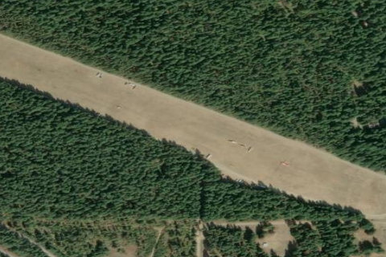

EASTON STATE
KESW · WA

Aerial imagery source: Esri, Vantor, Earthstar Geographics, and the GIS User Community
| Identifier | KESW |
|---|---|
| State | WA |
| Runway length | 2,640 ft |
| Runway width | 100 ft |
| Surface | TURF |
| Runway | 09/27 |
| Elevation | 2,226 ft |
| Ownership | public |
| CTAF | 122.9 |
| Coordinates | 47.25418388, -121.18553166 |
Notes
[shortfield] Location Overview Easton State Airport is a public-use airport situated about two nautical miles north of the small town of Easton, in Kittitas County, Washington. It sits on the eastern side of the Cascades near the approaches to both Snoqualmie and Stampede Pass, at a field elevation of 2,221 feet. The setting is quiet and scenic, surrounded by the natural landscape of central Washington's mountain corridor. Camping & Recreation The airport offers ample room for parking, camping, hiking, and relaxing in the quiet of nature, with four fire rings available on site. A crystal-clear stream runs along the east end of the airport, and a small store is located approximately one mile south on the access road. The broader Easton area also provides access to nearby national forest lands, lakes, and trails, making it a well-rounded destination for aviators looking to spend a night or a weekend outdoors. Notes & Warnings The single runway (9/27) is a turf surface measuring 2,640 by 100 feet, with a 300-foot displaced threshold on the west end. Density altitude can be a concern during summer months. The airport is seasonally closed from October 1 through June 1 due to winter snowpack and lack of maintenance — pilots should check NOTAMs for the actual spring opening date, as it may differ from the published June 1 date. Runway lighting is pilot-controlled (PCL), activated with 5 clicks on the CTAF, and times out after 15 minutes. History Easton Airport was built in the 1930s by the federal government to serve as an emergency landing field for DC-3s crossing the Cascades via Snoqualmie Pass. The state of Washington acquired it in 1958 to preserve it for continued public use. It has since become one of the most visited state-managed airports in Washington, valued both for its aviation utility as a gateway to the mountain passes and for its character as a fly-in recreation destination.